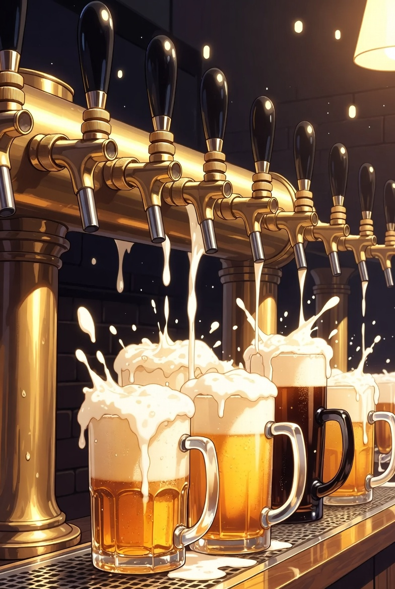

Hall of Taps Beers of the Year

Objectively ranking craft beer beyond the usual leaderboards.
Is there a way to objectively determine the best beer? The Hall of Taps gives us that answer.
We look at all the beers people are drinking and quantify which ones are the best. Just because a million people have checked-in Bells Two-Hearted Ale doesn't mean there isn't a better beer with only one hundred check-ins.